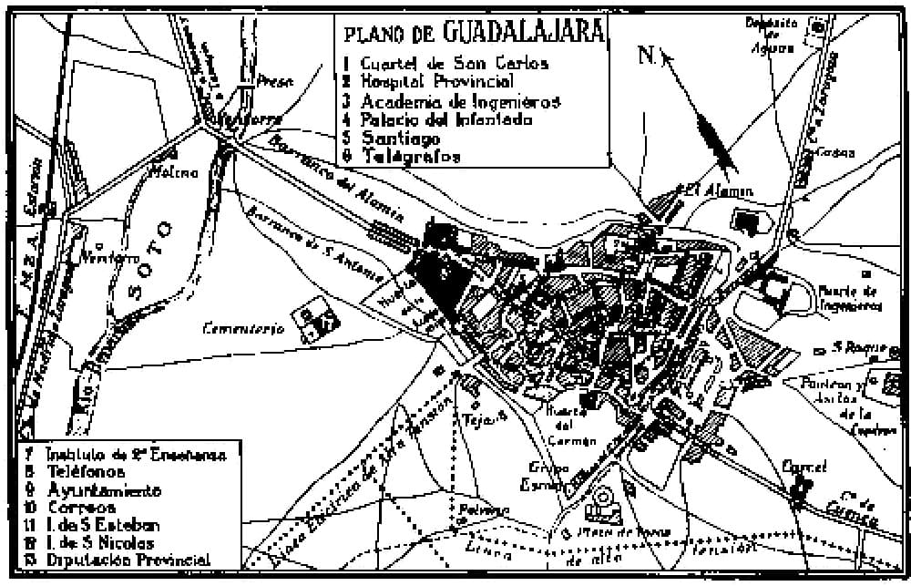

Unlike other towns, at the begin of this century is one of the most peaceful towns, no relevant events. The reasons may be in the military character of the city as it has The Military Academy of Engineers, San Carlos Barracks, Balloons Barracks, Fort San Francisco , and in the political field control of local life by Count of Romanones , local cacique of the time. This man was the son of Marques de Villamejor, which stood out for its great wealth and its great influence in Spain, having been mayor of Madrid twice and Senate President.
All military buildings will be destroyed in the Spanish civil war and not be carried out except restoration engineers Academy Infantado front of the palace. In addition much of the wall that would be almost eliminated with subsequent mayors of the Franco era, resting a small part of the original wall against the Tower of Alvarfáñez be destroyed. In economic terms included the Hispano Suiza automobile factory thanks to the intrigues of the famous Conde contracts. Also came the fire at the military academy in 1924 which was a major blow to the Alcarreña.
 In the civil war, Guadalajara was one of the cities that suffered more wear. Infantado Palace, symbol of past glories was set afire by German aviation bombers after missing the mark in the barracks of San Carlos would be completely destroyed.
Several important buildings were likewise destroyed, but Infantado Palace would be restored after the Civil War. Guadalajara was one of the few cities where the Republican army stand the stake of the national troops.
After the uprising of several generals headed by Manuel de Zarate would be quickly recovered and cities close to Madrid. It would be one of the cities that more time was on the Republican side, and would not escape the horrors of war.
In the civil war, Guadalajara was one of the cities that suffered more wear. Infantado Palace, symbol of past glories was set afire by German aviation bombers after missing the mark in the barracks of San Carlos would be completely destroyed.
Several important buildings were likewise destroyed, but Infantado Palace would be restored after the Civil War. Guadalajara was one of the few cities where the Republican army stand the stake of the national troops.
After the uprising of several generals headed by Manuel de Zarate would be quickly recovered and cities close to Madrid. It would be one of the cities that more time was on the Republican side, and would not escape the horrors of war.
Due to be of the last cities to fall the city it was not only supported by the Franco regime and would be one of the cities where hunger was passed after the war. At this time the city had only 15,000.
It was from 1950 when Guadalajara would initiate a gradual increase of the city, expanding the city further south from the Paseo de las Cruces. Appearing a well-equipped health center all with Pedro San Vazquez ruling,
physician and mayor of Guadalajara that influenced enough in the recovery of the town. the bullring, landmark would be reformed in the celebrations of the city.
It is from 1960 when Guadalajara experience a substantial change in population, doubling its population in just 20 years. Reaching 60,000 in 1980. This is due largely to the depopulation of rural communities.
In these decades it will be extended south to the Madrid Barcelona road, building many multi-store buildings from the walk crosses. It will begin to expand the city with wide avenues like Castilla and army.
A new hospital beyond the A2 highway linking Guadalajara with the capital resources of the most advanced at that time will be built.
Due to the growth of Madrid, Guadalajara will soon become a city of residential,
60 minutes from Madrid either by car or by train line that will have a network of commuter like other capitals of adjoining regions of Segovia or Toledo.
At the beginning of the democratic transition many of the streets of Guadalajara change of name and change its appearance many places like the city of Guadalajara and the Plaza de Santo Domingo, being eliminated numerous woodlands and replaced by granite or cobblestones as the town hall square.
There will be buildings like the old jail of Guadalajara to stop its use in the late twentieth century.
© 2016 - All Rights Reserved - Diseñada por Sergio López Martínez
![[Valid RSS]](https://www.feedvalidator.org/images/valid-rss-rogers.png "Validate my RSS feed")